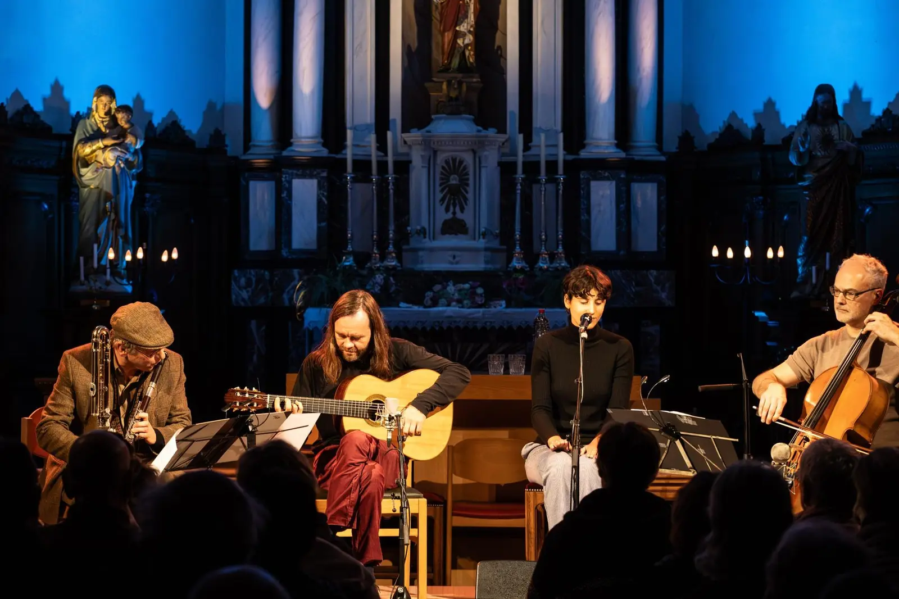
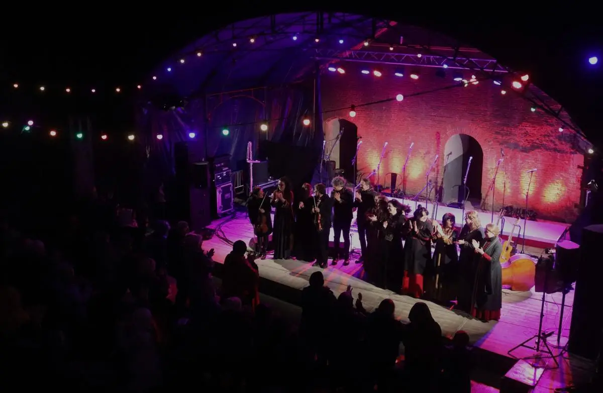

Collaborer
Pour les communes, fabriques d’église et sites patrimoniaux
Vous avez une chapelle, une église ou un site patrimonial qui appelle la musique ? Nous y apportons le folk et les musiques du monde. Nous choisissons les musiciens et nous occupons de la technique et de l’organisation, et vous en profitez avec vos habitants. Pour une soirée, une série ou une journée de festival complète.

Formules pour votre lieu
Ce que nous faisons dans nos propres lieux, nous l’apportons aussi dans votre commune, votre église ou votre site patrimonial. Nous nous chargeons de la programmation, de la technique et de l’accueil ; vous apportez un espace qui appelle la musique.
 Solo dans une chapelleKlanken in de kapelAvec des solistes du folk, des musiques du monde, du jazz et du classiqueUn musicien, une chapelle et un petit public : une courte soirée acoustique où la musique et le silence se rejoignent. Nous nous occupons de tout, de la concertation avec la chapelle à la coordination le jour même.Découvrir la formule →
Solo dans une chapelleKlanken in de kapelAvec des solistes du folk, des musiques du monde, du jazz et du classiqueUn musicien, une chapelle et un petit public : une courte soirée acoustique où la musique et le silence se rejoignent. Nous nous occupons de tout, de la concertation avec la chapelle à la coordination le jour même.Découvrir la formule → Marcher en musique livePromenades musicalesAvec des musiciens acoustiques du folk et des musiques du mondeUne promenade à travers bois, landes ou village, avec de courts concerts acoustiques en chemin. Chez vous ou dans la Merode, entièrement organisée par nous. Aussi comme sortie pour votre équipe ou vos clients.Découvrir la formule →
Marcher en musique livePromenades musicalesAvec des musiciens acoustiques du folk et des musiques du mondeUne promenade à travers bois, landes ou village, avec de courts concerts acoustiques en chemin. Chez vous ou dans la Merode, entièrement organisée par nous. Aussi comme sortie pour votre équipe ou vos clients.Découvrir la formule →
Une deuxième soirée dans votre égliseDoubler nos concerts d’égliseAvec les artistes de nos concerts d’égliseLes mêmes artistes et le même programme que nos concerts d’église, un autre soir dans une église de votre commune. Nous venons avec l’équipe et la technique ; vous vous occupez du public.Découvrir la formule →
Une journée de festival sur votre site patrimonialUne journée de festival sur un site patrimonialAvec des musiciens folk et des musiques du mondeUn site patrimonial, une journée et un programme adapté au lieu. Nous construisons une journée de festival autour de votre site, comme nous le faisons à l'Abdij van Park et sur la Citadelle de Diest. Nous nous chargeons du programme et de l'organisation ; vous, du lieu et du public de votre commune.Découvrir la formule →


Lieux d’écoute
De la musique et des histoires qui continuent de résonner sur un site patrimonial, même en dehors du concert.
 Installation musicale, LangdorpHuis der WeemoedMerodefestival, avec Toon Van Mierlo, Reineke Van Hooreweghe et Sophie JannaDans une ancienne petite morgue près de la Sint-Pieterskerk de Langdorp, un film mystique et des sons célestes apportent du réconfort dans le deuil et l’adieu.Découvrir le lieu d’écoute →
Installation musicale, LangdorpHuis der WeemoedMerodefestival, avec Toon Van Mierlo, Reineke Van Hooreweghe et Sophie JannaDans une ancienne petite morgue près de la Sint-Pieterskerk de Langdorp, un film mystique et des sons célestes apportent du réconfort dans le deuil et l’adieu.Découvrir le lieu d’écoute → Projet d'installation, 2026–2027Huis der Weemoed : sept lieux, sept chansonsMerodefestival, avec Laura Cortese, Toon Van Mierlo, Ward Dhoore, Reineke Van Hooreweghe et Bert HuysentruytSept lieux patrimoniaux du parc paysager de la Merode, chacun avec sa propre chanson pour une étape de la vie, interprétée par sept voix de femmes issues de traditions vivantes de musique populaire.Découvrir le lieu d’écoute →
Projet d'installation, 2026–2027Huis der Weemoed : sept lieux, sept chansonsMerodefestival, avec Laura Cortese, Toon Van Mierlo, Ward Dhoore, Reineke Van Hooreweghe et Bert HuysentruytSept lieux patrimoniaux du parc paysager de la Merode, chacun avec sa propre chanson pour une étape de la vie, interprétée par sept voix de femmes issues de traditions vivantes de musique populaire.Découvrir le lieu d’écoute →
Nous travaillons notamment avec
Stad Leuven (Beleuvenissen), Abdij van Park (PARK Festival), Gemeente Holsbeek (Holsbeek Sessies), Provincie Vlaams-Brabant (Musique à la ferme), Kerkfabriek Langdorp (projets divers).
Parlons de votre lieu
Le coût dépend du lieu et de ce que vous souhaitez. Nous établissons ensemble une proposition sur mesure.